لماذا
منصة القيمة من الطازج
توصية وخطة تجربة للقرار
رد على موجز منصة القيمة، النسخة 3نوفمبر 2026
توصية وخطة تجربة للقرار
ابدأ بالخيارين ثم التوصية. الخيار 1 سريع، والخيار 2 هو الذي يعطي أسعار فاليو حقيقية بدون مقارنة مباشرة مع الوجبات الحالية.
المصدر: رصد 19 أكتوبر 2026، بالريال شاملة الضريبة. كنتاكي وماكدونالدز والبيك وكودو بأسعار تطبيقات التوصيل، وماكدونالدز محدّث من نينجا (الرياض) في نوفمبر 2026. أرخص مشوي عند سلسلة كبرى: الرومانسية 28 شامل أرز وجانبين وبيبسي صغير.
النزول تحت 15 يضعنا في سباق مع علامات أكبر في المقلي. التميز المتاح في المنتج لا في الرقم. إن سُئلت عن المطاعم المحلية: محل محلي يبيع ربعًا مع أرز بـ 16 بلا مشروب، لكنه ليس سلسلة.
أكّد أن إبقاء الفروج خارج المنصة قرار مقصود لحماية أكبر صنف، وهو جواب مباشر على قلق الموجز.
اشرح الفرق بجملة: الخيار 1 يخصم من سعر موجود، والخيار 2 يبني صنفًا على السعر. الثاني لا يملك سعرًا سابقًا يقارنه العميل به.
كل الأسعار محسوبة من منيو الطازج الحالي، ولا يوجد سعر مخترع. برجر عربي وملفوف عند 20 هو أعلى صنف، ويمكن حذفه.
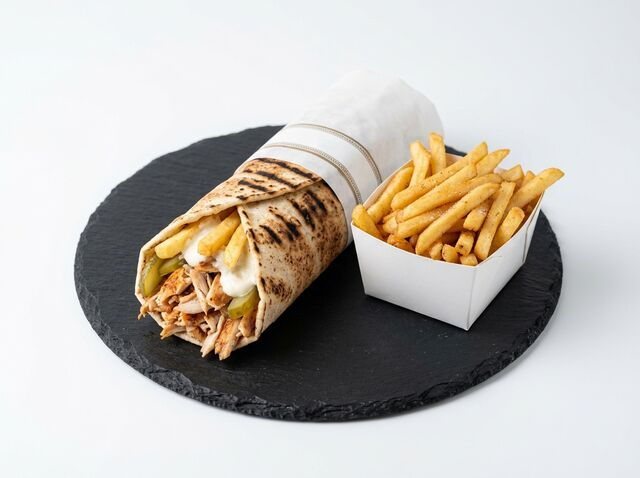


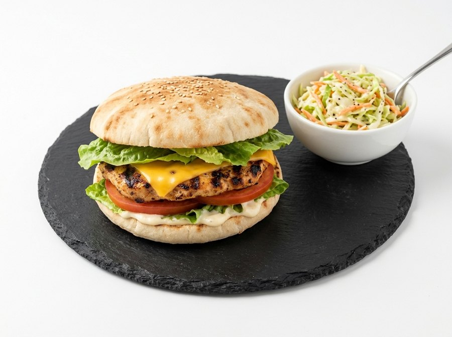

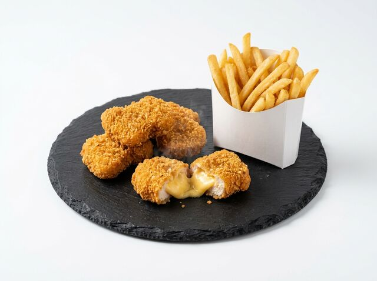
الصور توضيحية.
هذه أسعار مستهدفة. القاعدة: نثبت السعر ونضبط الحصة. لا يوجد مكون جديد في القائمة، فقط طريقة تحضير وتغليف.
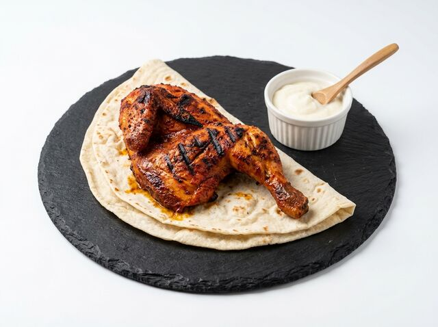
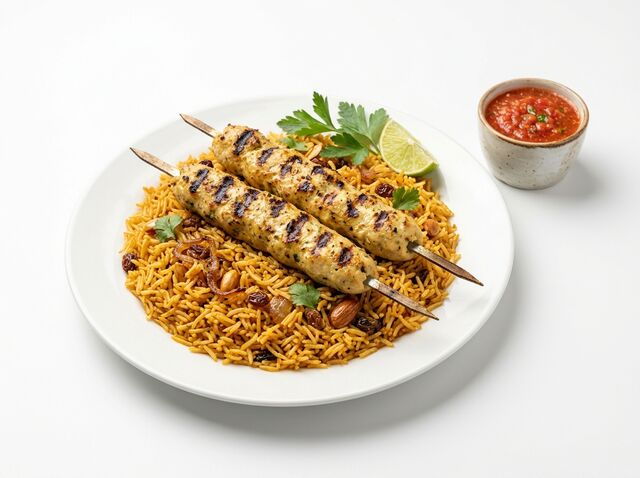

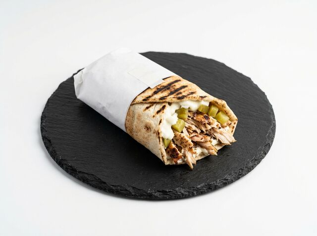
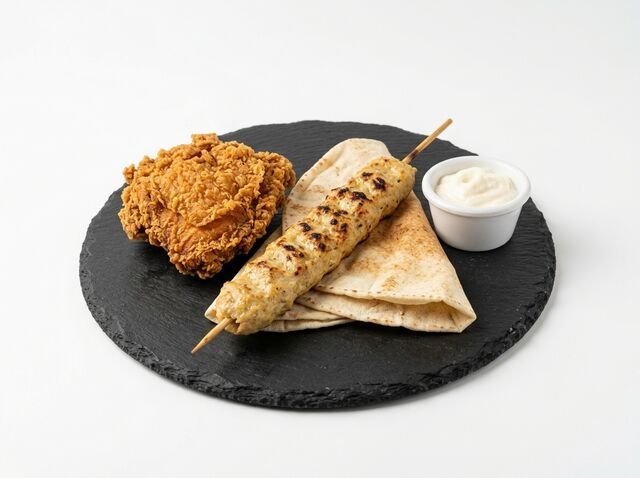
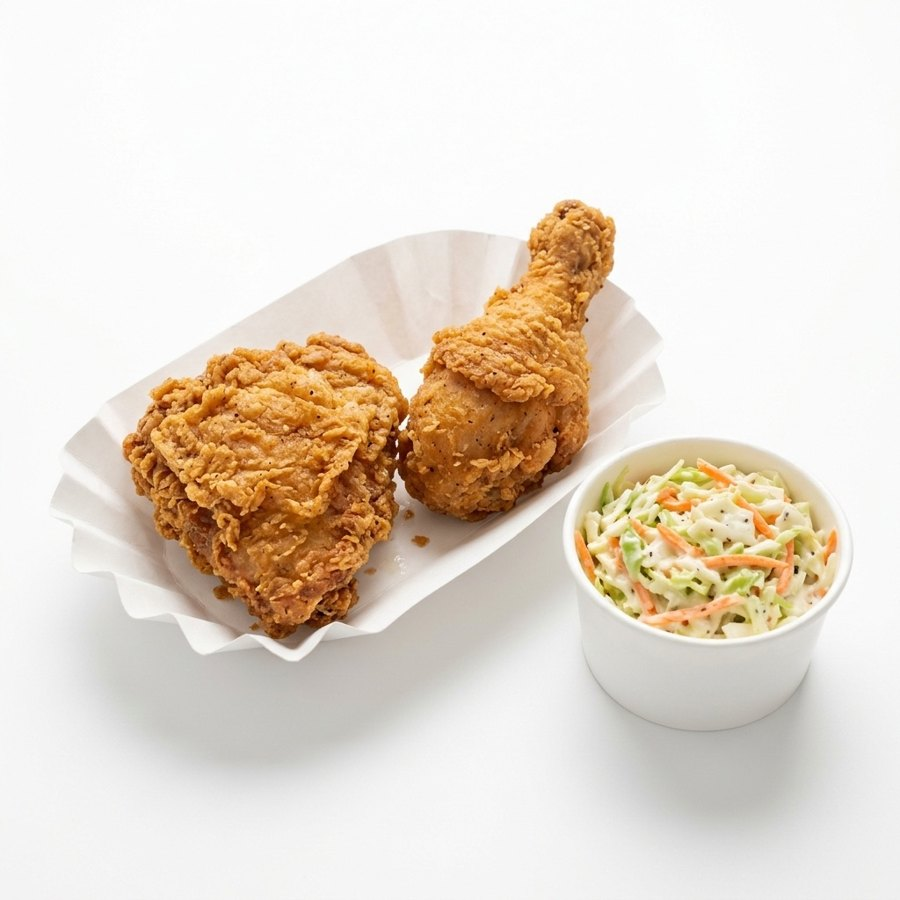
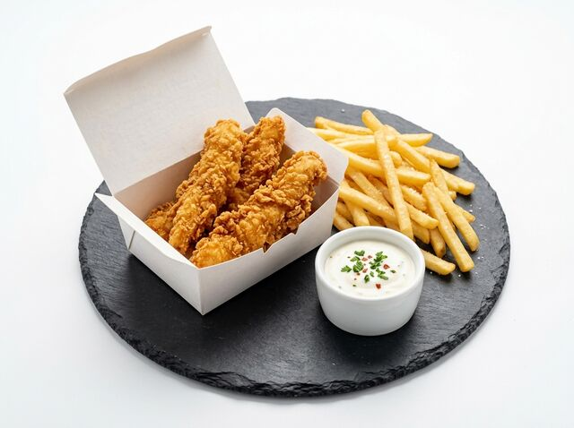
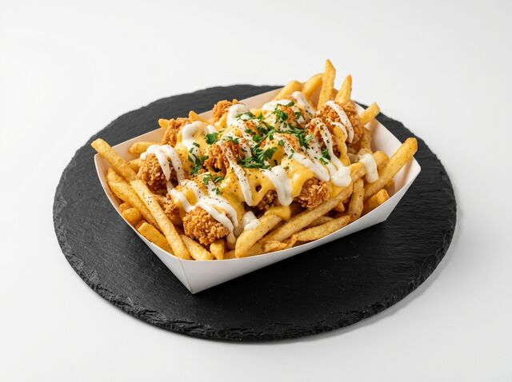
الصف الأول مشوي، والثاني مشكّل ومقلي.
الخلاصة: الخيار 1 يكسب في السرعة والبساطة، والخيار 2 يكسب في السعر وحماية الوجبات الحالية.
إن فضّل الطازج خيارًا واحدًا فقط: الخيار 1 للسرعة، أو الخيار 2 إن كانت الأولوية حماية الوجبات الحالية.
اقترح التمويل المشترك مع بيبسيكو دون وعد. أسعار الوسط والكبير افتراض حتى يؤكدها الطازج.
كل ضابط له رقم نراقبه. إذا سُئلت "كيف نعرف أنه نجح؟" أشر إلى العمود الأخير.
توقف بعد السطر الأول. لا تشرح كثيرًا. الفكرة تخدم الهدف الثالث في الموجز: حماية العلامة.

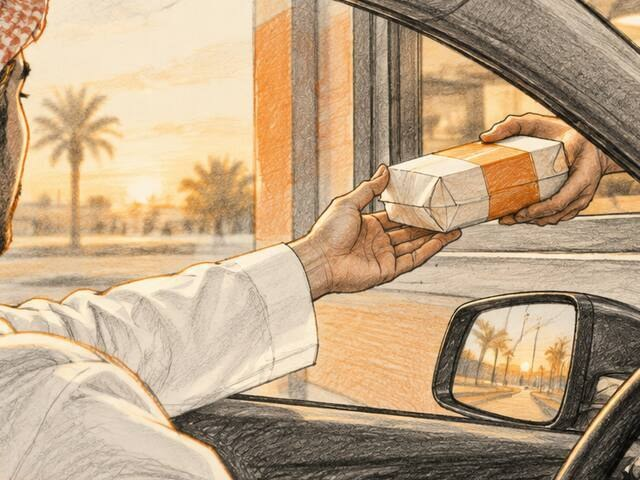

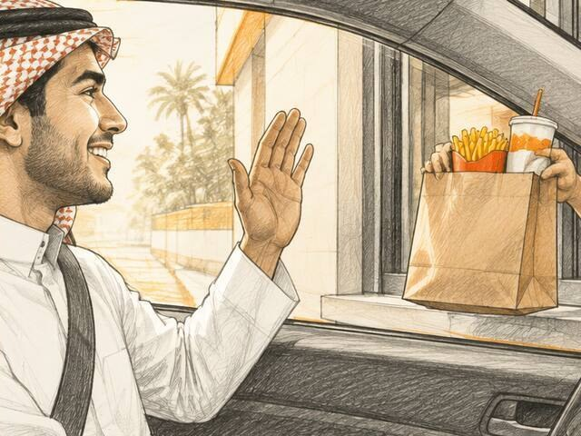
المشاهد كما في العرض الأصلي، مع تعديل الختام: "زِدها بيبسي" بدل "خلها وجبة"، لأن الترقية هي ما يرجّع الخصم.
لاحظ الترتيب في كل تصميم: اللحظة أولًا، ثم الصنف، والسعر صغير، والتوقيع "على الفحم، زي العادة" يحمي الجودة.
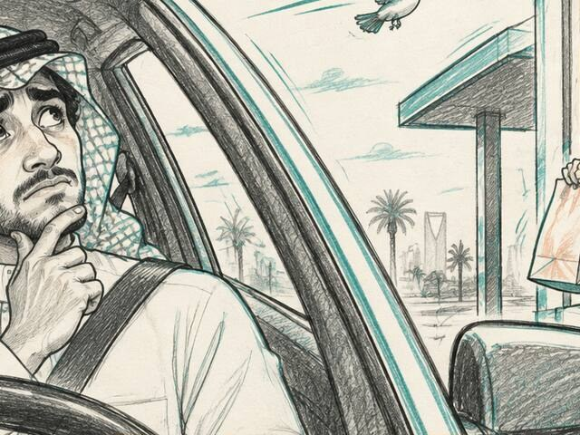
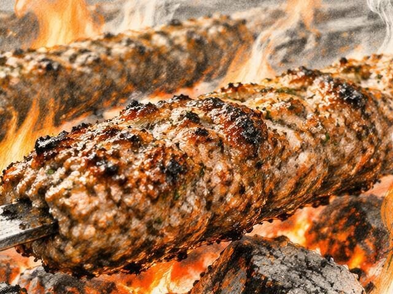
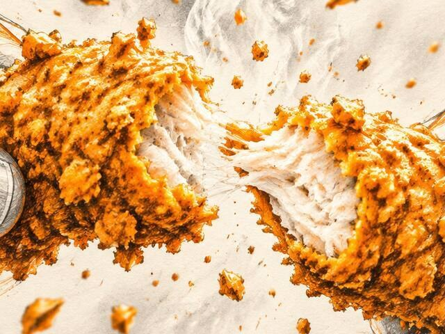

هذه الشريحة تجيب على سؤال الموجز الثالث مباشرة: كيف نؤطر القيمة دون "رخيص". كل تنفيذ يُراجع عليها قبل النشر.
اطلب من العميل اختيار اسم واحد في الاجتماع. "بين وبين" تبقى فكرة الحملة أيًا كان الاسم.
الأرقام مقترحة. شدد أن قيمتها في الاتفاق المسبق: لا نقيّم النتائج بمعايير نختارها بعدها.
كل فكرة مربوطة بمؤشر في شريحة السلوك: عملاء جدد، تكرار، معاملات خارج الذروة، استعادة المنقطعين.
اختم بسؤال مباشر: "هل نعتمد التجربة بهذه المعايير؟"
أقوى شريحة أمام المالية. لا تفترض هامش المشروب رقمًا، حتى لو كان معروفًا أنه عالٍ عادة. اطلب التكلفة.
لا تقل إن أسعار الطازج مرتفعة. قل إن تركيبة الوجبة هي ما يرفعها، وهذا ما يبرر فصل المشروب.
القرار النهائي يعتمد على عمولات التطبيقات، وهي عند الطازج. اطلبها صراحة في هذه الشريحة.
اعرضها كما قُدّمت أولًا. قوتها أنها تبيع مناسبة جديدة لا سعرًا أقل، وهذا بالضبط ما يطلبه الموجز: زيارات إضافية لا منقولة.
احترم العمل الأصلي: التحسين لا يغيّر الفكرة، بل يربطها بالمنصة والتسعير والقياس.
هذه شريحة التوصية الإبداعية. توقف بعد السطور الثلاثة.
الفكرتان لا تتعارضان: الأولى تقول متى، والثانية تقول أي واحد.
هذا ما يحوّل الإبداع من رأي إلى أداة قابلة للقياس. كل تنفيذ له مؤشر.
ميزانية الإنتاج والإعلام تُقدَّم بعد اعتماد الاتجاه والفروع. لا نضع رقمًا الآن.
الأسابيع تُحسب من الإطلاق بعد نجاح التجربة.
المخاطر الثلاثة كلها تُقاس في التجربة قبل أي تعميم.
شكرًا لكم